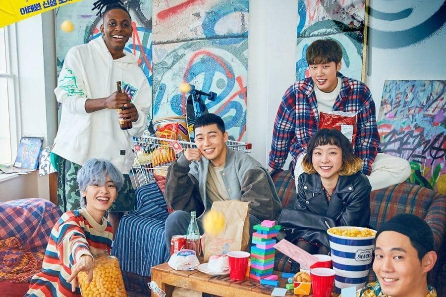

K-dramas are relatable
Korean dramas give you the usual romance or action kind of scenes,
but they also exhibit issues in Korean and global society that are relatable to many.
These include topics on mental health, suicide, bullying, gender inequality, corruption,
and racism. Genres on family and history are also common in K-dramas.

.webp)
Historical Fantasy K-Dramas ‘Alchemy of Souls’
Netflix has been releasing a new episode of its latest historical fantasy KDrama, Alchemy of Souls, every week,
keeping fans on the edge of their seats. Written by the Hong sisters, the drama is set in a fictional country called Daeho,
and follows the conflict between mages and an assassin named Naksu (Go Yoon-Jung) who is bent on killing them. Naksu is a
“soul shifter” — meaning that she is able to practice a rare and forbidden form of magic that allows her to switch bodies with another person.
Mortally wounded after a confrontation with an elite group of mages, she switches bodies with another girl named Mu-Deok (Jung So-Min), only to
find that her new body is weak, and she is no longer able to practice magic. Meanwhile, Jang Uk (Lee Jae-Wook) comes from a noble family, but
has been cursed by his father to be unable to perform magic. The mages, by seeing a certain mark on Naksu’s dead body, know that her soul has
shifted bodies. As they search fruitlessly, however, Jang Uk immediately recognizes Naksu in Mu-Deok, who has been sold as a prostitute.
He protects her by hiring her as his servant,hoping she will be the teacher who can finally free him from the spell that makes him unable to perform magic.
Korean dramas are notable for how bingeable they are, making Netflix’s weekly release format even more frustrating.
Luckily, however, Alchemy of Souls is part of a long tradition of historical fantasy dramas, and fans can easily binge these as they wait
impatiently for the next episode. In no particular order, here are 11 of the best historical fantasy KDramas.